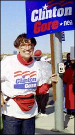
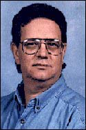
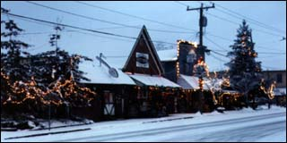

|
 Clinton, Yes! by Tarja Black http://www.av.qnet.com/~yes My web site lists many of President Clinton’s accomplishments while refuting Republican economic predictions and the Dole election bid in general. I launched the site in order to counter negative remarks about the President found on the Internet. I live in Los Angeles, and I'm 60 years old. I changed
my on-line name to Tarja (from Ethel) so that younger web
users would be attracted to the site as well. Here's a
quote from the What We’re About section of my site: “[The
President] undoubtably knows he’d get more political
payoff by helping bankers instead of students or by
lowering the taxes of late-night comics instead of the
taxes of low-income workers. But as a man of character,
he does the right thing anyway.” |
In the Presence of Power
by Marty Gallanter http://jwp.bc.ca/martyg/  My name is Marty Gallanter. I'm an ex-New Yorker living in rural Minnesota. One day, I went to hear the President and Vice President speak at the National Rural Conference at the Univeristy of Iowa. Once there, I found that the two men I had only experienced through TV screens and newspaper articles became real, living people that cared deeply about rural America. I wrote up an editorial which is posted on my web site, and also want to share his story with Clinton/Gore supporters. Here's an excerpt: “I expected the President to open
the conference and leave. He didn't. He chaired it
personally for over five hours and when his voice began
to fade, the Vice-President took over. The huge briefing
books set down by the aides for the President and
Vice-President were never opened. Both men carried on
extensive and complex discussions supported entirely by
the knowledge they carried in their heads.” 
|
Major Speeches of the
President
by Jane Prettyman http://www.rain.org/~openmind/ I've created a web site with five major speeches of the President including photographs and quotes. I chose the speeches because they embody American values the President stands for: tolerance, free speech, religious freedom, civil rights and national community. President Clinton will be remembered for his values and I'm helping keep his words in the public domain through my site. “These speeches are powerful and clear and educationally important for the re-election effort” Here's a quote from one of my favorite speeches: “If you want to preserve your own freedom, you must stand up for the freedom of others with whom you disagree. You cannot have one without the other.” —President Clinton, Michigan State University speech after Oklahoma bombing, March 1995 |
||
|
|
||||
|
 A couple in Washington state sent us email about meeting a local police officer hired due to the President's Crime Bill. They were having a yard sale when the new officer stopped by. Rick Riopelle wrote us, “My wife and I are pleased that this program is in effect and gratified that it touched our community in a positive and meaningful way.” |
||||
|
|
||||
|
|
||||
|
|
||||
Paid for by Clinton/Gore ’96 General Committee, Inc.